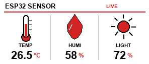

即時感測
DHT11 讀取溫度與濕度，光敏電阻讀取環境亮度，電子紙每 60 秒更新。
PROJECT OVERVIEW
每個資料點都能被讀取、傳送、顯示與控制，從基礎範例逐步整合成可展示的物聯網作品。
DHT11 讀取溫度與濕度，光敏電阻讀取環境亮度，電子紙每 60 秒更新。
以 JSON 發布 temp、humi、light 與感測器有效狀態。
訂閱三個 MQTT topic，控制綠、黃、紅三路 LED。
HARDWARE MAP
使用 V4 / Rev2.1 模組，橫向解析度 296×128。腳位統一後，適合課程重複使用與快速換版。
MQTT CONNECTION
Broker 使用 mqttgo.io:1883。以下設定與目前的 40_epaper_mqtt 完整對應。
{
"temp": 25,
"humi": 60,
"light": 75,
"dhtValid": true,
"lightValid": true
}alex/class301/ctrl/gledalex/class301/ctrl/yledalex/class301/ctrl/led4控制 payload：{"state":"on"} 或 {"state":"off"}

PROJECT RESULTS
以下照片已整理尺寸並移除原始影像中可能包含的拍攝裝置資訊，僅保留硬體與畫面成果。


SEPTEMBER REPORT
0914 課程報告圖示已整理為公開展示版本；Wi‑Fi SSID 等個人設定已隱藏。


PROGRAM INDEX
每支程式都保留獨立資料夾，方便課程逐步編譯、比較與延伸。